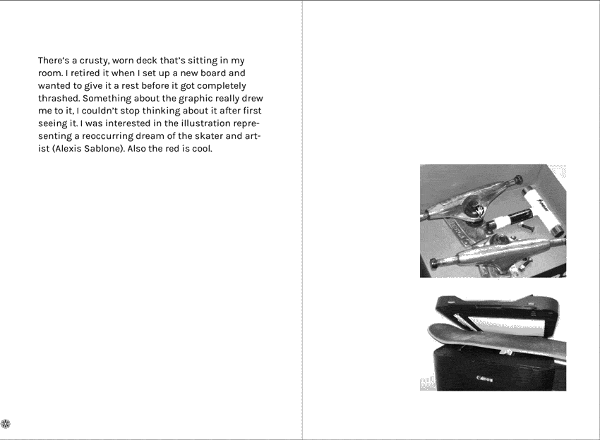

Book of Sorts [Unconventional Publishing]
Date: April-June 2020
Size: 110 x 160 mm
A publication that documents a meandering journey that connects various "things", ranging from memories from before lockdown, to udon noodles, to a Spotify playlist for and about the book.

